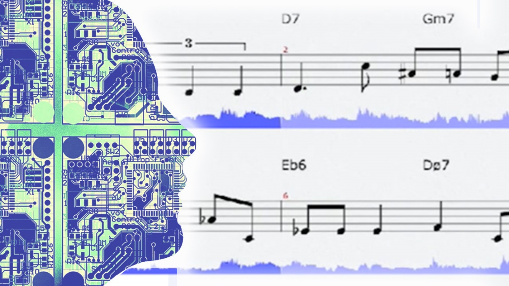
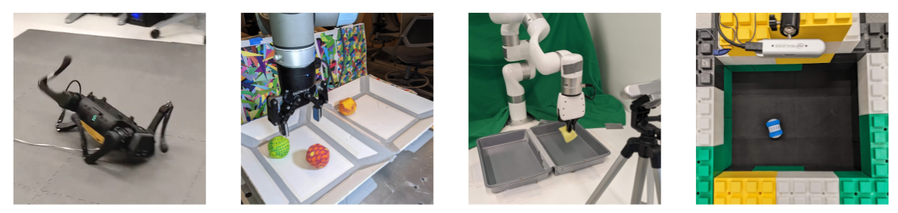

什么是人工智能
先不急着背定义，从“哪些机器看起来聪明”开始。
本节学习主线
- 智能机器的千年梦想
- 人工智能就在身边
- 计算与智能行为
- 辨析常见误解
- 形成自己的判断标准
人类很早就想制造“会做事的机器”
鲁班木鹊模仿飞鸟，偃师制作的歌舞机器人模仿人的外貌和动作，加扎利用水力驱动自动乐器。它们有的模仿生物形态，有的复现人的动作，有的按照预先设计的机械过程运行。
这些装置体现了“自动机器”的早期形态，也留下一个延续至今的问题：机器只是按照结构运动，还是能够根据环境作出判断？人工智能研究正是在这个问题上进一步前进。
想一想
- 木鹊、歌舞机器人和自动乐器分别模仿了人的哪些能力？
- 一个装置能够连续自动运行，是否足以说明它具有智能？
- 如果机器的全部动作都由机械结构预先决定，它与今天的人工智能有什么差别？

人工智能并不遥远，它已经进入日常生活
刷脸支付接收的是人脸图像，输出的是身份判断；语音助手接收声音，输出命令理解和执行结果；AI谱曲接收风格、情绪等要求，输出新的旋律。把输入和输出写清楚，能帮助我们摆脱“看起来很神奇”的笼统印象。
人工智能的表现既可以是识别，也可以是生成。识别任务从已有选项中作出判断，生成任务则产生新的文字、图像或音乐。两者都依赖从信息中发现规律。
想一想
- 刷脸支付、语音助手和AI谱曲各自接收什么信息，又给出什么结果？
- 身份识别与音乐生成有什么共同点，又有什么不同？
- 如果语音助手只能识别固定的几个口令，它的能力边界在哪里？
定义人工智能，要同时抓住两个核心
“计算”强调机器必须通过信息处理得到结果，而不是只靠材料的物理性质完成动作。“模拟智能行为”强调结果要表现出感知、理解、判断、推理、学习、生成或行动等能力。
同一个系统可能同时包含普通自动控制和人工智能。例如机器先按固定程序启动，再利用识别结果决定下一步。判断时要分析具体环节，而不是给整个产品贴一个简单标签。
想一想
- 一个系统只有计算，却没有感知、判断或生成等行为，可以直接称为人工智能吗？
- 机器使用摄像头是否就意味着它能够“看懂”画面？
- 怎样用“输入—计算—输出”的方式解释一个熟悉的AI系统？

机器人、编程与人工智能不是同一个概念
AlphaGo没有人的外形，也没有机械手臂，但它能根据棋局选择落子。焊接机械手具有明显的机器人形态，却可能只重复固定轨迹。外形属于机器的物理形态，智能则要看信息处理和决策方式。
编程是告诉计算机如何执行任务的手段。普通软件和人工智能系统都需要程序，但人工智能还要处理规则难以完全写清、需要识别或学习的任务。
想一想
- 为什么AlphaGo不是机器人，却通常被认为具有很强的人工智能能力？
- 为什么焊接机器人很有价值，却未必具有很高的智能？
- “会编程”与“理解人工智能”有哪些联系，又为什么不能完全画等号？
判断“智能”不能只看自动化程度
磁石被加热到居里点后失去磁性，电饭锅利用这一物理变化自动断电。它不需要辨认米饭，也不需要学习不同烹饪经验，因此“自动”来自材料性质和结构设计。
比较机械闹钟、自动洗衣机、随机碰撞扫地机器人、手机、遥控无人机和协作足球机器人时，可以依次追问：是否感知环境、是否根据输入改变策略、是否从经验中学习、是否与其他机器协作。
想一想
- 电饭锅自动断电时发生了计算吗？它模拟了哪一种智能行为？
- 随机碰撞后转向的扫地机器人，与会建图和规划路线的机器人有什么不同？
- 在课程列出的机器中，哪一台最智能？你的判断标准是什么？
完成本节后，你应当能够说明
- 人工智能以计算为手段，研究如何模拟人类智能行为。
- 人工智能不等于机器人，也不等于编程。
- 判断一个系统是否属于人工智能，应依据工作机制与行为，而不能只看外形或“自动”二字。
想一想：综合讨论
- 电饭锅自动断电算不算人工智能？为什么？
- 列出的几种机器中，你认为哪一种最智能？请先说明判断标准。